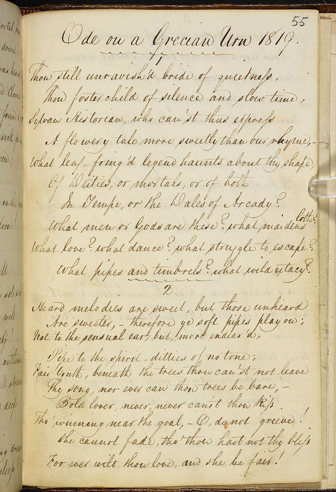
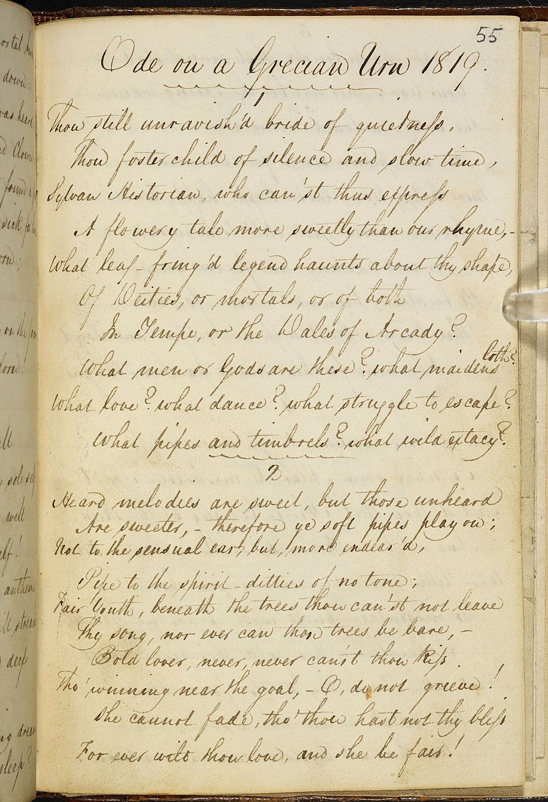

| Title | Sense to Sense |
| Subtitle | translating, writing, & designing between the senses |
| Instructors |
Meg Miller & Laurel Schwulst |
| Dates |
5 weeks:
|
| Time |
Sundays: 7-8pm ( WWW ) Mondays: 6-9pm ( In-person ) |
| Location |
Boerum Hill, Brooklyn ( in-person ) ( Specific address will be shared with participants ) |
| Price |
$850 ( two half priced scholarships available ) |
| Application Deadline | May 30, 2025 at 11:59pm EST — APPLY |
Sense to Sense is a publishing class about translation and the senses. Over five weeks, participants will engage in readings and discussion about the five senses and explore what it means to carry sensations over into written form. How can a fragrance become a poem? What are the different ways to write an image, or to document a sound? Ursula K. Le Guin says, “all writing is translation” — from the perceptual into language. Similarly, we’ll look toward the senses to expand our use of language and to strengthen our writing voices. By the end of class, we’ll collect and publish some of our experiments into a publication.
This class is taught by Meg Miller & Laurel Schwulst and happens two consecutive days of the week (Sunday & Monday) for five weeks. We’ll meet: 1) Virtually on Sundays for one hour reading discussions, 2) In-person in Brooklyn, NY on Mondays for three hours of exercises, sharing work, and publication making.
***
Note: We designed this class for in person, but depending on demand we’re open to opening a hybrid option. If you are interested in the class but you’re not in New York City, write us: sense-to-sense@ultralight.school.
 


Keywords
- Essence
- Materiality
- Perception
- Publication
- Senses
- Translation
- Writing
Background
Translation is traditionally understood as between languages — in The Philosophy of Translation, Damion Searls traces translation back to its Latin root translatio, meaning “to carry across.” The Renaissance later introduced traductio, or traduction, shifting the emphasis from simple transport to a holistic transformation — one that preserves the essence, or soul, of the original in an entirely new form. Walter Benjamin, in The Task of the Translator, similarly suggests that translation is not about equivalence but transformation, a process that illuminates the original by placing it in a new constellation of meaning.
Artists, in many ways, are natural translators. Art makes the world unfamiliar so we can see it anew. Artists are naturally sensitive and attuned to enchantment, estrangement, and sensation — qualities that make them skilled at transmitting meaning across boundaries.
Our class name, “Sense to Sense,” is a play on the term “sense-for-sense translation.” This is an approach to translation that prioritizes transmitting the overall meaning of the text — as opposed to “word-for-word translation,” a literal translation of every word. It’s the oldest norm for translation, stretching back to Cicero.
In this context, “sense” is of course referring to a meaning conveyed or intended. But we couldn’t help but think about that other definition of “sense,” the one referring to smell, sight, hearing, taste, and touch.
For this publication class, we’ll focus on translating the five senses into language as a way of strengthening (and eventually self-publishing) our writing. We’ll look at examples of writing that translate smell, sound, visual art, etc., and we’ll also read literary and linguistic translators writing about the art of translation.
Translators are people who think a lot about language — its material, its melody — and about how a translation is never just a copy, it is always something new, always a collaboration. We’ll take our cues from them as we pay attention to the rhythm, cadence, structure, and voice of our own writing. We’ll also see what happens when the original or source is not a text but a sensation — how that might push up against the limits of language, or require a new use of it…
Does that make sense?
We — Meg and Laurel — have long been interested in what arises when you translate across the senses.
As an art and design writer, Meg thinks a lot about writing that is in conversation with visual art. As an artist and web designer, Laurel enjoys understanding something anew through rendering it in a new form and sharing it. We both enjoy attempting to describe scent. Together, we’ve had many conversations about how translation across the senses can bring new awareness to language and art.
***
Meg: When I started working on a past seminar about translation and the senses, I sent you the syllabus to look over because I knew you had been thinking about similar subjects...
Laurel: I was honored you asked me about it. I remember we talked about how artists are sensitive to the world, and that’s what makes them good receivers and translators of material, or the essence or spirit of things. Sometimes I call this “sensorial spirit translation.”
Meg: Can you think of a particular moment when the subject of translation became really interesting for you?
Laurel: Good question. Maybe it was being in art school and feeling a pressure around constant invention. I realized that I could translate something into a new format as a way of honoring it; I like to think of this as subconscious invention. Similar to drawing or painting a still life — without even trying, every person’s translation will be different. We are all unique filters of experience.
An interesting thing about art, too, is that a translation can come from an invisible place. That is, how do we translate an image that somehow appears into our minds? There’s that Joan Didion quote you shared with me, from her piece “Why I Write” ...
When I talk about pictures in my mind I am talking, quite specifically, about images that shimmer around the edges... Look hard enough, and you can't miss the shimmer. It’s there. You can't think too much about these pictures that shimmer. You just lie low and let them develop.
Meg: Right, that quote helped inform my class about writing as image-making — after Didion’s quote, I gave the class the subtitle “shimmer around the edges.”
How does translation show up in your teaching now?
Laurel: I like to weave translation into all parts of my classes, since it not only helps people feel comfortable by giving them a clear mission, but I also understand translation as the basis of all art-making...
How did the group publication for your writing seminar go this year?
Meg: It was great, the participants really pulled it out and wrote, edited, designed, coded, and printed a beautiful publication called Say Sense Is Not Everything. The title came from Sawako Nakayasu’s Say Translation Is Art, which you introduced us to, and their pieces were about translation and the senses, but also about the untranslatable. Ultimately, all of the writings in the book were lovely examples of how circling around the thing can bring us closer to the essence and truth of the experience than saying it directly.
I love making group publications because, one, I think publications are a way of creating a social body — it’s a thing to organize around — and, two, it really does something to see your work published. In the writing-as-image-making class we made a book called Polyphonic Shimmering, and a while back I came into your classes at Yale and VCU to help make The Internet Onion. And I loved the Ultralight Publication you made with your ultralight workshop last year. I’m excited to make one with this class.
Laurel: Yeah, I’m curious to see what form(s) our group publication will take!

Meg Miller is a writer and editor living in Richmond, Virginia who has contributed writing to the New York Times, Frieze, BOMB, Los Angeles Review of Books, The Atlantic, and other web and print publications, mostly about the ways design, art, language, and technology shape culture and society. She’s editorial director at Are.na and teaches at Virginia Commonwealth University.
Laurel Schwulst is interested in ambient forms of design and literature, public works, and the poetic potential of the world wide web. Laurel has held design and creative direction roles at companies including Linked by Air, Kickstarter, and Are.na. She has taught design at Princeton, Yale, and her own learning initiatives: Fruitful School and Ultralight School.

FAQ
( What is the class format? )
The class meets for ten sessions over the course of five weeks. Sessions happen on Sunday evenings (7-8pm) virtually for reading discussion, and Monday evenings (6-9pm) for exercises, sharing work, and publication making. Specific dates: 6.15, 6.16, 6.22, 6.23, 6.29, 6.30, 7.6, 7.7, 7.13, 7.14.
( Can I participate remotely? )
We designed this class to be in-person, but if there is sizable interest from people outside of New York City, we are open to creating a hybrid option. If you would like to take the class but cannot be there in person, please email sense-to-sense@ultralight.school to let us know.
( What materials do I need? )
Something to write and design with. Some prefer notebooks and pen/paper, others laptops.
( Are there scholarships available? )
Yes, there are two half-priced slots available for individuals who need help funding the class.
( Who might be good for this class? )
We imagine this class is ideal for anyone who is interested in multi-sensorial experience and would like to evolve their writing practices. Or, maybe you'd like to simply have fun writing through translating the senses this summer. The class will end in a group publication, so it's also a good way to gain experience having your work published. Additionally, we would like to form a complementary and supportive group (please see our code of conduct), so we welcome anyone with specific perspectives and/or skills who are excited to witness and encourage others’ writing experiments and publication efforts.